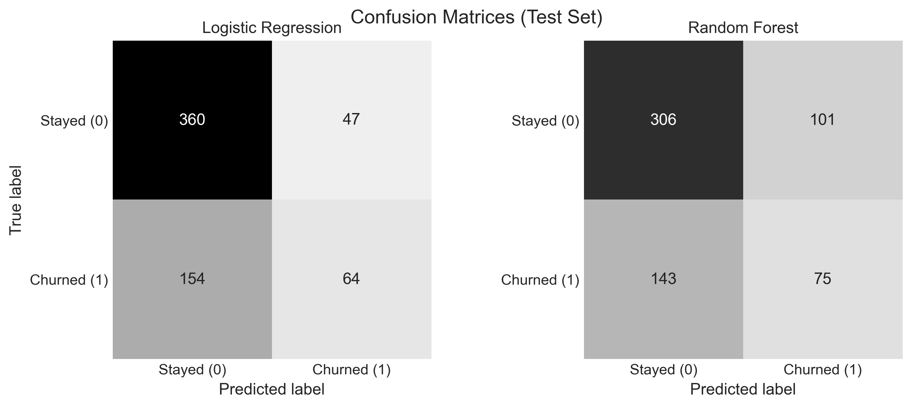
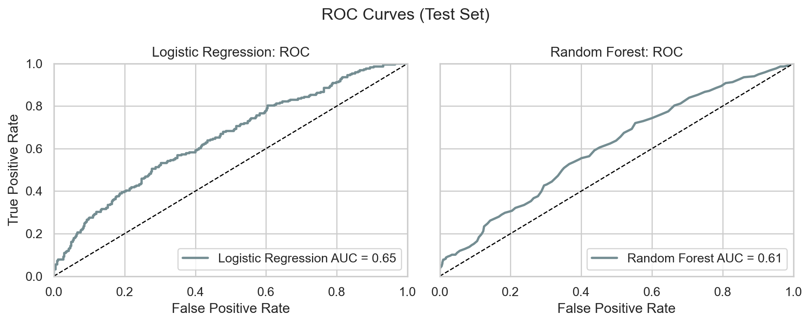

Part 3: Churn Prediction Modeling
This section builds the prediction engine. Two machine learning models were trained and compared to identify which members are most likely to cancel before they actually do. The goal is to give studio leadership a reliable list of at-risk members to act on.
View full notebook on GitHub
What Does a Prediction Model Actually Do Here?
The model looks at what a member does, how often they attend, how long they have been a member, how engaged they are, and uses those patterns to estimate how likely they are to cancel.
Think of it like a doctor looking at a patient's chart before symptoms appear. The model is not reacting to a member who just cancelled. It is flagging members who show the early behavioral signs of someone who typically cancels, so the studio can reach out before the decision is made.
The output is a risk score for every member. The higher the score, the more likely that member is to churn. That score is what drives the tiered outreach strategy in Part 4.
Two Models, Two Approaches
Two types of models were built and compared. Each has a different philosophy.
Logistic Regression
Think of this as a transparent scorecard. It adds up the signals from each member's behavior, applies a
weight to each one, and produces a churn probability. The math is straightforward enough that you can see
exactly why it flagged someone. The trade-off is that it works best when the relationships between signals
are relatively simple and direct.
Random Forest
Think of this as a committee of decision makers. It builds 100 different decision trees, each looking at the
data slightly differently, and takes a vote. It is better at picking up on complex patterns like "members
who are young, relatively new, and attend fewer than 2 classes per week are at high risk." The trade-off is
that it is harder to explain any single prediction.
Both models were evaluated on the same test set of 625 members, held back from training so the results reflect real-world performance rather than memorization.
Which Model Won?
Logistic Regression is the better choice for this use case.
| Metric | Logistic Regression | Random Forest |
|---|---|---|
| Accuracy | 67.8% | 61.0% |
| Precision (churn flags) | 57.7% | 42.6% |
| Recall (churners caught) | 29.4% | 34.4% |
| AUC | 0.650 | 0.610 |
Accuracy is the percentage of all predictions that the model got right. Logistic Regression is correct 67.8% of the time overall.
Precision is the more important number for this use case. Of all the members the model flagged as at-risk, how many actually churned? At 57.7%, Logistic Regression is right more than half the time when it raises a flag. Random Forest is only right 42.6% of the time, meaning more than half its flags would be wasted outreach effort.
Recall measures how many actual churners the model caught. Random Forest catches slightly more (34.4% vs 29.4%) but at the cost of flagging far more members who were never going to leave. For a studio with limited staff time, precision matters more than recall.
AUC measures overall ranking ability from 0.0 to 1.0. Think of it as the probability that the model ranks a random churner as higher risk than a random non-churner. A score of 0.50 is a coin flip. 0.60 to 0.70 is modest but useful. 0.80 and above is strong. Logistic Regression at 0.650 outperforms Random Forest at 0.610. Both are operationally useful.
Confusion Matrix
The confusion matrix breaks down exactly what the model got right and wrong on the 625-member test set.
- True Positives (64): Members correctly flagged as likely to churn. These are the intervention opportunities.
- True Negatives (360): Members correctly identified as likely to stay. No action needed.
- False Positives (47): Members flagged as at-risk who were actually fine. Wasted outreach effort, but a manageable number.
- False Negatives (154): Members who churned but were not flagged. These are the missed opportunities and the main limitation of the model at this precision setting.
Logistic Regression's 47 false positives compare favorably to Random Forest's 101. Fewer false positives means less wasted staff time on members who were never at risk.
{kind=link}

ROC Curve
The ROC curve shows all possible trade-offs between catching real churners and falsely flagging members who were going to stay. The x-axis is the false positive rate. The y-axis is the true positive rate. The diagonal line is random guessing. Any curve above it is doing better than chance. Curves closer to the top-left corner are stronger.
The Logistic Regression curve sits above the Random Forest curve across most of the chart, confirming its higher AUC. Both curves are modest, which is consistent with the nature of this dataset. The signal is real but the behavioral patterns are not perfectly separable.
{kind=link}

What Drives Churn? The Top Predictors
The model tells you not just who is at risk but why. These are the five factors that matter most.
Random Forest was used for feature importance because it captures more complex patterns than Logistic Regression, even though Logistic Regression was selected as the operational model.
Age
Younger members churn at higher rates. They tend to have more transient schedules and less established fitness habits. Age alone is not actionable, but it informs how to segment outreach.
Weekly class attendance (23.0%)
The number of classes a member attends per week over the past six months is one of the strongest early warning signals. A drop in frequency is often the first visible sign of disengagement before a cancellation happens.
Membership tenure (22.6%)
The longer someone has been a member, the less likely they are to leave. The first six months are the highest-risk window, which is consistent with what the EDA showed. Getting a new member through that window is the highest-return retention investment.
Engagement score (21.0%)
A composite measure of overall activity and consistency. Members with declining engagement scores are significantly more likely to churn. This is the single most actionable signal for proactive outreach because it is visible before the member stops showing up entirely.
Monthly membership cost (4.9%)
Higher-priced memberships are associated with slightly higher churn, particularly when engagement is low. Price sensitivity becomes a factor when members are not feeling the value of what they are paying for.
What did not matter: auto-renew status (1.9%)
Consistent with the EDA finding, whether a member is on auto-renew has almost no predictive power. The billing preference is not the driver. The behavior behind the billing is.
What This Sets Up
The model produces a churn risk score for every member. That score is what drives the tiered outreach strategy in Part 4. High-risk members get direct personal outreach. Medium-risk members get targeted digital communication. Low-risk members get general loyalty programming.